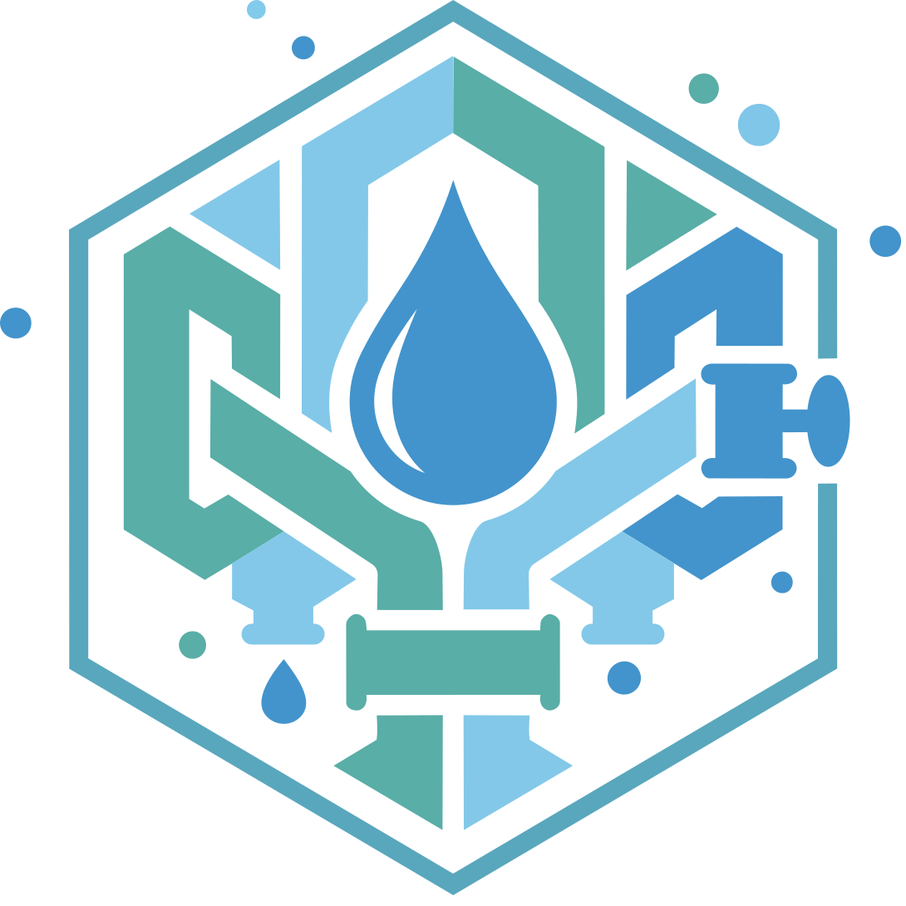

BLOG POSTING MANUAL
ブログ・お知らせ
投稿マニュアル
はじめての方でも大丈夫。
この冊子どおりに進めれば、5分でブログ・お知らせが公開できます。
迷ったら遠慮なく LIGO まで、お気軽にご連絡ください。
Contents ／ 目次
ログインから公開まで、6つのステップにわけてご案内します。気になるページだけ読んでいただいても構いません。
01
まずはログイン
社内でのみ共有される「秘密URL」から管理画面にログインします。
02
ブログ記事を書く
左メニューの「投稿」から、タイトルと本文を入力します。
03
写真を追加する
ドラッグ＆ドロップで、現場写真を記事に挿入できます。
04
記事を公開する
カテゴリーを選んで「公開」ボタン。あとから修正もできます。
05
お知らせを書く
休業日・採用情報など、会社としての公式なご連絡。
06
よくあるご質問
つまづきやすいポイントと、お問い合わせ先をまとめました。
各ページの右側にある画面イメージは、実際の管理画面とほぼ同じ見た目です。黄色い枠で囲まれた場所が、そのステップで操作する箇所です。
画面イメージと見くらべながら、上から順に進めてください。
社内でのみ共有される「秘密URL」からログインします。
お渡ししたログイン専用URLを、ブラウザで開きます。（URLは口頭でお伝えします）
ユーザー名（ID）とパスワードを、それぞれの入力欄に打ち込みます。
青いボタンを押せば、管理画面が開きます。以上でログイン完了です。
YUKOH SETSUBI
紙への印刷や、社外向けメール・SNSへの記載は厳禁です。他の社員に伝えるときは、口頭または社内チャットのみで。パスワードもふくめ、大切に管理してください。
「投稿」から新しい記事を作成します。
管理画面の左サイドバー「投稿」にマウスを合わせて、「新規追加」をクリック。
一番上の大きな枠に、記事のタイトルを書き込みます。
例：「配水管の布設替工事、完了しました」
タイトルの下の大きな枠に本文を書きます。Wordに書くのと同じ感覚で大丈夫です。
特別なことじゃなくて大丈夫。「今日の現場でこんなことがあった」「新人と一緒にBBQをやった」「畑のきゅうりが豊作」など、日常のちょっとした話題で十分です。写真1〜2枚と、短い文章（3〜5行）でも立派な記事になります。
ドラッグ＆ドロップで、簡単に写真を挿入できます。
本文中の写真を入れたい場所で「＋」ボタンをクリック →「画像」を選択。
「アップロード」でPCの中から選ぶか、そのままドラッグ＆ドロップでもOK。
右サイドバー「アイキャッチ画像」で、記事一覧に表示される見出し写真を1枚選びます。
ここに写真をドロップ
または
最大 10 MB ／ JPG・PNG
iPhoneや普通のデジカメで撮った写真を、そのまま使えます。サイズは自動で調整されます。拡張子は JPG / JPEG / PNG どれでもOK。1枚あたり 10MB 以内が目安です。
最後に「公開」ボタンを押せば、世界中から読めるようになります。
右サイドバー「カテゴリー」から、記事のジャンル（現場・朝礼・活動 等）にチェック。
「プレビュー」を押すと、公開後の見え方が確認できます。まずここで確認するのがおすすめ。
問題なければ、右上の青い「公開」ボタンをクリック。確認画面でも「公開」を押します。
公開
プレビューで確認
カテゴリー
現場 朝礼 活動アイキャッチ画像
公開済みの記事は、いつでも「編集」ボタンから修正できます。また、右サイドバーで「公開状態」を「下書き」に戻せば、一度非公開に戻すこともできます。安心して公開ボタンを押してください。
ブログとは別に「お知らせ」も投稿できます。
ブログの下にある「お知らせ」→「新規追加」をクリック。
ブログと同じように、タイトルと本文を入力します。
青い「公開」ボタンでOK。トップページの「最新情報」に自動で表示されます。
ブログ：現場のリアル、社内イベント、日常の話題など、社員のみなさんの人柄が伝わる話。／お知らせ：休業日、採用情報、受注案件など、会社としての公式なお知らせ。迷ったら「ブログ」に投稿しておけば大丈夫です。
F.A.Q ／ よくあるご質問
操作でよくいただくご質問をまとめました。解決しないときは、遠慮なくご連絡ください。
パスワードを忘れてしまいました
ご心配なく。LIGO 池下（ikeshita.tsukashi@li-go.jp）までご連絡いただければ、パスワードの再発行を承ります。
間違えて公開してしまいました
左メニュー「投稿」から該当記事を開き、右サイドバーの「公開状態」を「下書き」に切り替えて更新すれば、非公開に戻せます。
スマホからでも投稿できますか？
はい、スマホ・タブレットのブラウザからでも投稿できます。同じ秘密URLにアクセスすれば、パソコンと同じように使えます。
下書きのまま、まだ公開したくない
右上の「公開」ボタンではなく、「下書き保存」を押してください。次回ログイン時に「投稿一覧」から続きを書けます。
写真をたくさん載せてもいいですか？
全然大丈夫です。ただし1枚あたり10MB以内、記事全体で20枚くらいまでが目安です。多すぎるとページの表示が遅くなります。
投稿した記事はどこで見られますか？
公開後、ホームページの「Blog」または「News」メニューから一覧で表示されます。トップページにも最新3件が自動表示されます。
SUPPORT DESK
お困りのときは、いつでも
LIGO までご連絡ください
操作方法・不具合・パスワード再発行など、何でもお気軽にご相談ください。
「ここが分かりにくい」というご意見も、マニュアル改訂の参考になりますので大歓迎です。
PERSON株式会社LIGO ／ 池下
MAILikeshita.tsukashi@li-go.jp
TEL080-5182-1045
URL口頭でお伝えした秘密URL
NOTE社外への共有は厳禁です
MEMO
ブログ投稿マニュアル ／ 2026年7月版
制作：株式会社LIGO（li-go.jp）